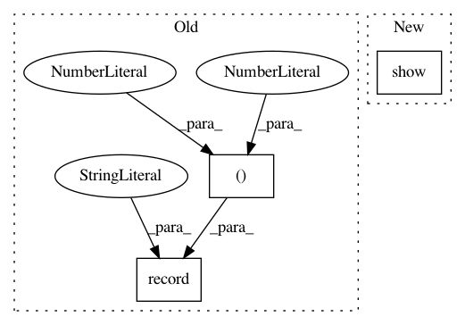

aac7b54c8d6957786a9aa70e896cef10fe0ab9fe,doc/examples/tracking_pft.py,,,#,39
Before Change
renderer.clear()
renderer.add(actor.line(streamlines, cmap.line_colors(streamlines)))
window.record(renderer, out_path="probabilistic_streamlines.png",
size=(600, 600))
.. figure:: probabilistic_streamlines.png
:align: center
After Change
window.record(r, out_path="tractogram_pft.png",
size=(800, 800))
if interactive:
window.show(r)
.. figure:: tractogram_pft.png
:align: center
In pattern: SUPERPATTERN
Frequency: 4
Non-data size: 3
Instances
Project Name: nipy/dipy
Commit Name: aac7b54c8d6957786a9aa70e896cef10fe0ab9fe
Time: 2019-07-21
Author: girard.gabriel@gmail.com
File Name: doc/examples/tracking_pft.py
Class Name:
Method Name:
Project Name: nipy/dipy
Commit Name: cf7d0bdc4133ea3248e054fa93aa2b5a6f8f2fca
Time: 2013-09-11
Author: stjeansam@gmail.com
File Name: doc/examples/compute_SNR_in_corpus_callosum.py
Class Name:
Method Name:
Project Name: nipy/dipy
Commit Name: 6c524d66dcd30d98a0f0c991252a3be644fa58ef
Time: 2013-09-11
Author: stjeansam@gmail.com
File Name: doc/examples/compute_SNR_in_corpus_callosum.py
Class Name:
Method Name:
Project Name: nipy/dipy
Commit Name: c2cfaf314a381e520883eba2d965cd93fd5572e0
Time: 2019-07-21
Author: girard.gabriel@gmail.com
File Name: doc/examples/tracking_bootstrap_peaks.py
Class Name:
Method Name: